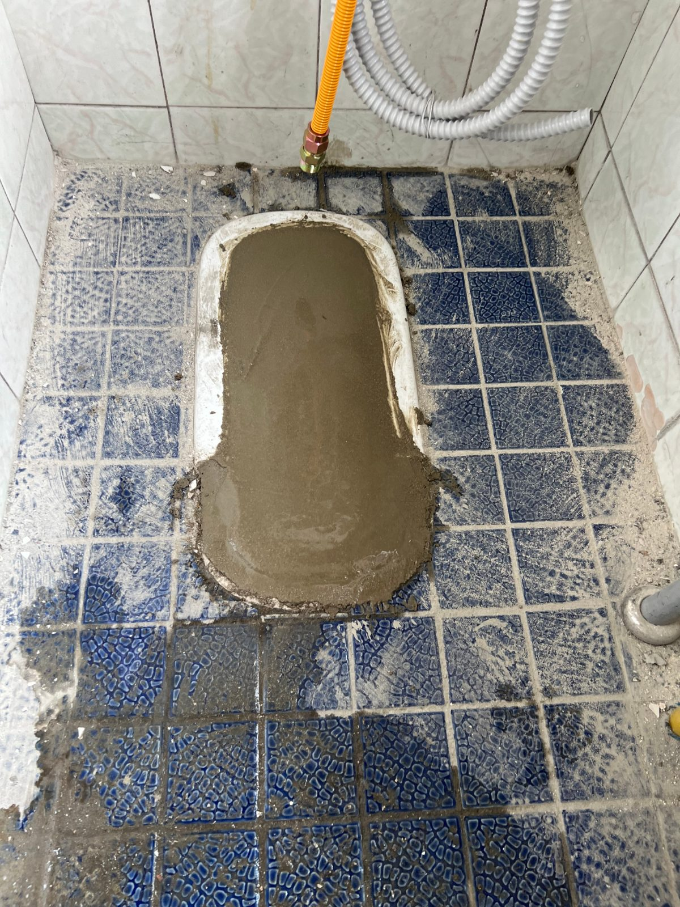
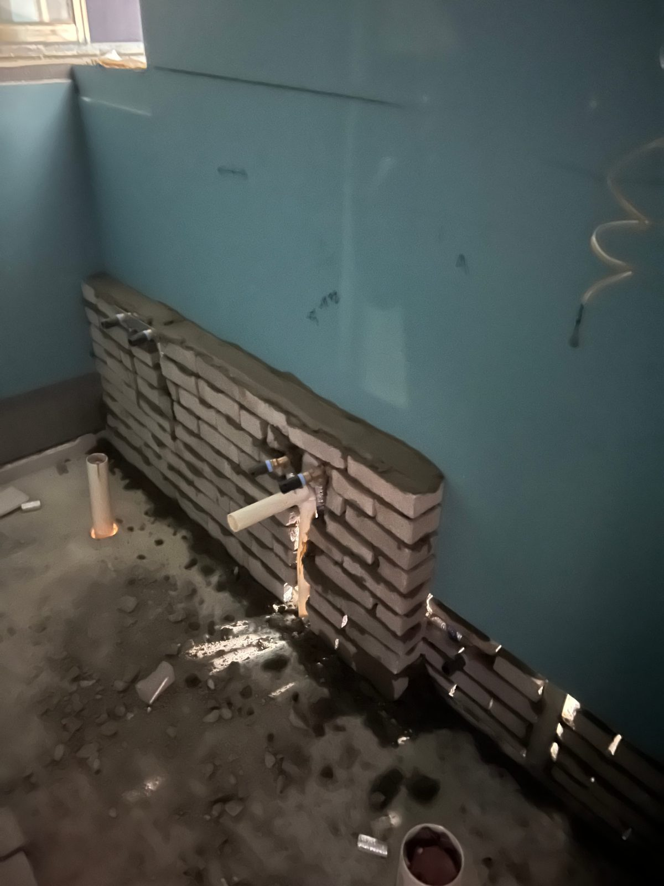

대전 카페 건물 화장실 리모델링 — 철거부터 방수 3차, 보일러 설치까지

기구 철거, 도막방수 1~3차, 환풍기·벽돌 작업, 난방·미장, 가스보일러 설치까지 여러 공정이 순서대로 들어간 상가 화장실 현장입니다.
어떤 공사였나요
대전의 한 카페 건물 위층 화장실을 전체 리모델링한 현장입니다. 기존 기구 철거, 도막방수 1~3차, 환풍기·벽돌 작업, 난방 고정·미장, 가스보일러 설치까지 공정이 많았던 현장이라 순서를 기록으로 남깁니다.
철거와 방수
기존 위생기구를 철거하고 바닥·벽을 정리한 뒤, 도막방수를 올렸습니다. 상가 화장실은 사용량이 많아 방수를 3차까지 진행했고, 각 차수 사이 건조 시간을 지켰습니다.

환풍기·벽돌 작업
환풍기 자리를 커팅하고 벽돌을 쌓아 배기 경로를 만들었습니다. 습기가 빠져야 방수도 마감재도 오래갑니다.

난방·미장과 보일러
난방 배관을 고정하고 미장으로 바닥을 잡은 뒤, 위층 화장실에 온수를 안정적으로 공급하기 위해 가스보일러를 설치했습니다.
이 현장의 포인트
여러 공정이 얽힌 현장은 순서가 곧 품질입니다. 방수 건조 전에 미장을 올리거나 배기 경로 없이 마감하면 나중에 다시 하게 됩니다. 한 사람이 처음부터 끝까지 현장을 책임지면 공정 순서가 흐트러지지 않습니다.